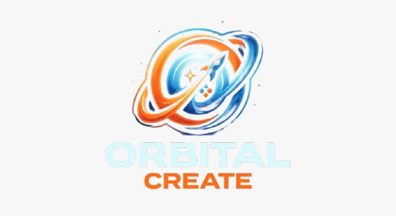

01D · P · S
Socios clave
- Arte del juego y audio por explorar.
- Jugadores participantes en pruebas previstas.
- Docentes: orientación del enfoque ambiental.
Modelo de negocio · Evaluación universitaria
Cowsmo: Space Rescue

Fuera del Canvas · Solo ejemplo
Ejemplo aritmético separado del Canvas. No es una previsión de ventas ni demuestra rentabilidad; no descuenta comisiones, impuestos ni costos de la etapa comercial. Ingreso bruto no equivale a utilidad.
Decisión de planeación
MVP académico: gratuito, evaluación y validación con jugadores; sin ventas presupuestadas.
Comercial posterior: pago único en PC y desbloqueo en Android. Precios, demanda y costos de publicación por validar.
La existencia de documentación no acredita builds completos ni lanzamientos en tiendas.
Diseño documentado · GDD, p. 13
Alcance del diseño; no se afirma que todos estén implementados. La cantidad de niveles del MVP debe acordarse.
D = documentado · P = propuesto · S = por validar. Abre cada bloque con clic, toque o teclado. La impresión incluye todos los detalles.
Base documental y procedencia: README, arte/assets y contexto académico; GDD, pp. 4, 6 y 17. Orientación ambiental específica y colaboración externa propuestas.
Base documental y procedencia: GDD, pp. 4–5, 12–13 y 17–19; README, mecánicas de Cowsmo.
Base documental y procedencia: GDD, pp. 1, 4–5, 7–13 y 17; README, mecánicas y arte/assets; image/Logo.jpeg.
Base documental y procedencia: GDD, pp. 4–9, 12–13 y 18; README, descripción y mecánicas.
Base documental y procedencia: GDD, pp. 13 y 17; recepción de comentarios y actualizaciones propuestas para Cowsmo.
Base documental y procedencia: GDD, pp. 17–18; Google Play y difusión como canales propuestos, sin publicación confirmada.
Base documental y procedencia: GDD, pp. 6 y 17; subdivisión de edades, compradores y mercado inicial propuestos.
| Concepto | Operación | Importe |
|---|---|---|
| Assets y recursos gráficos | $1,200 | $1,200 MXN |
| Música y efectos de sonido | $600 | $600 MXN |
| Internet atribuible al proyecto | $200/mes × 4 | $800 MXN |
| Electricidad atribuible al proyecto | $150/mes × 4 | $600 MXN |
| Pruebas y logística | $500 | $500 MXN |
| Difusión y presentación | $300 | $300 MXN |
| Subtotal | $4,000 MXN | |
| Contingencia | 15% × $4,000 | $600 MXN |
| Total de efectivo | $4,600 MXN |
| Actividad | Referencia interna | Valor |
|---|---|---|
| Programación e integración | 160 h × $100 | $16,000 MXN |
| Diseño de niveles y arte | 120 h × $100 | $12,000 MXN |
| Pruebas y documentación del juego | 100 h × $100 | $10,000 MXN |
| Trabajo aportado | 380 horas | $38,000 MXN |
| Costo económico total | Efectivo + trabajo | $42,600 MXN |
Son estimaciones de planeación. El trabajo aportado no se suma al dinero que debe desembolsarse.
Base documental y procedencia: GDD, p. 17: categorías de producción; importes conservados del presupuesto profesional como estimaciones.
Base documental y procedencia: GDD, p. 18; precios puntuales conservados como propuestas, no ventas realizadas.
Fuentes locales: README del proyecto · GDD · Archify anterior · Codex anterior.